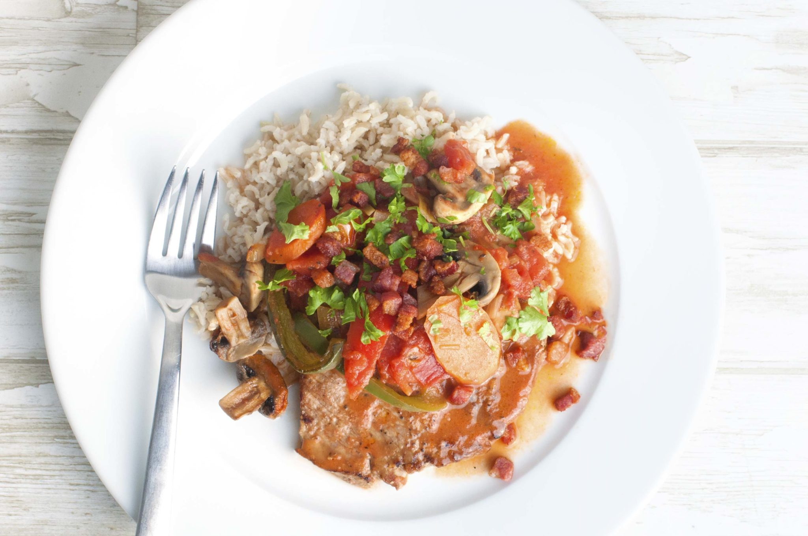
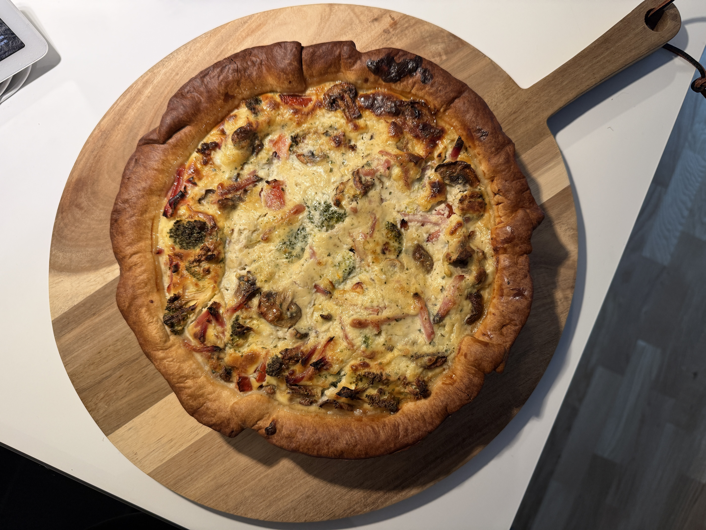

Derfor skal du undgå madspild
Derfor skal du vælge det...
På denne side vil vi komme med nogle tips til, hvordan du kan undgå madspild i din hverdag. Der skal stå noget mere, men det kan jeg ikke komme på lige nu og her. Nu skal jeg lidt videre med noget andet, så vender jeg tilbage hertil senere.

På denne side vil vi komme med nogle tips til, hvordan du kan undgå madspild i din hverdag. Der skal stå noget mere, men det kan jeg ikke komme på lige nu og her. Nu skal jeg lidt videre med noget andet, så vender jeg tilbage hertil senere.
Derfor skal du vælge det...
På denne side vil vi komme med nogle tips til, hvordan du kan undgå madspild i din hverdag. Der skal stå noget mere, men det kan jeg ikke komme på lige nu og her. Nu skal jeg lidt videre med noget andet, så vender jeg tilbage hertil senere.
På denne side vil vi komme med nogle tips til, hvordan du kan undgå madspild i din hverdag. Der skal stå noget mere, men det kan jeg ikke komme på lige nu og her. Nu skal jeg lidt videre med noget andet, så vender jeg tilbage hertil senere.


Ugens måltid
Koteletter i fad med grøntsager
Ugens måltid
Tærte med grøntsager
Læs mere her om ugens retter